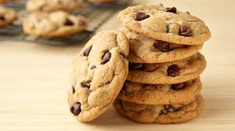
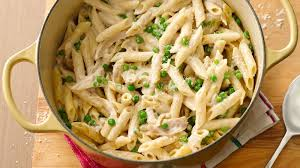
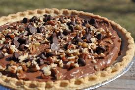
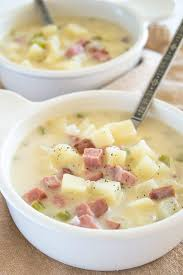
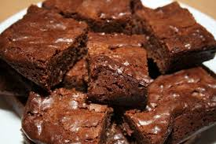

| Chocolate Chip Coookies | Chicken Alfredo | Turtle Pie | Potato Soup | Chocolate Brownies |
|---|

| Ingediants | Directions |
|---|---|
| 1 cup butter, softened | 1.)Preheat oven to 350 degrees F(175 degrees C) |
| 1 cup white sugar | 2.)Cream together the butter, white sugar, and brown sugar until smooth. Beat in the eggs one at a time, then stir in the vanilla. Dissolve baking soda in hot water. Add to batter along with salt. Stir in flour, chocolate chips, and nuts. Drop by large spoonfuls onto ungreased pans. |
| 1 cup packed brown sugar | 3.)Bake for about 10 minutes in the preheated oven, or until edges are nicely browned. |
| 2 eggs | .................. |
| 2 teaspoons vanilla extract | .................. |
| 3 cups all-purpose flour | .................. |
| 1 teaspoon baking soda | .................. |
| 2 teaspoons hot water | .................. |
| 1/2 teaspoon salt | .................. |
| 2 cups semisweet chocolate chips | .................. |
| 1 cup chopped walnuts | .................. |

| Ingediants | Directions |
|---|---|
| 1 box (16 oz) penne pasta | 1.)In large pot of water, cook penne pasta until al dente as directed on box. Drain; return pasta to pot. |
| 2 tablespoons olive oil | 2.)Meanwhile, heat oven to 350°F. In 10- to 12-inch nonstick skillet, heat olive oil over medium heat. Add uncooked chicken tenders; season with salt and pepper. Cook 5 to 7 minutes or until chicken is no longer pink in center. |
| 2 lb uncooked chicken tenders (not breaded), cut into chunks (Salt and pepper to taste) | 3.)Add chicken and broccoli to pasta; stir to combine. Stir in alfredo sauce until well blended. |
| 1 bag (12 oz) frozen broccoli cuts, thawed | 4.)Pour mixture evenly into ungreased 13x9-inch (3-quart) glass baking dish. Sprinkle cheese evenly over top. |
| 2 jars (16 oz each) Alfredo sauce | 5.)Bake 30 to 40 minutes or until heated through in center and cheese is melted. |
| 2 cups shredded mozzarella cheese (8 oz) | .................. |

| Ingediants | Directions |
|---|---|
| 1 (9 inch) graham cracker crust | 1.)In mixer, beat cream cheese and powdered sugar until smooth. Add the peanut butter, milk and 3 tablespoons peanuts. Beat until smooth. |
| 8 ounces cream cheese, at room temperature | 2.)Fold in 2 cups of Cool whip. |
| 3⁄4 cup powdered sugar | 3.)Spoon filling into graham cracker crust. |
| 1⁄2 cup chunky peanut butter | 4.)Refrigerate for 1 hour or until set. |
| 2 tablespoons milk | 5.)Top with remaining Cool Whip. (You can either put Cool Whip on as a top layer, or you can individually serve the Cool Whip as a large dollop on each piece of pie.). |
| 3 tablespoons chopped roasted peanuts | 6.)To serve, place piece of pie on plate and drizzle with some chocolate syrup and then some caramel syrup. Sprinkle with chopped roasted peanuts. |
| 4 cups Cool Whip, divided | 7.)You can also serve with some powdered sugar, chocolate curls and mint sprigs. |
| 1⁄4 cup chopped roasted peanuts | ......... |
| carmel syrup | ......... |
| chocolate syrup | ......... |

| Ingediants | Directions |
|---|---|
| 1 large potato, per person | 1.)Peel and cube potatoes. |
| 1⁄4 cup chopped celery, per person (include leaves) | 2.)Put in a saucepan along with the onions and celery. |
| 1⁄4 cup chopped onion, per person | 3.)Add water, but don't quite cover the vegetables. |
| \1⁄4-1⁄2 cup milk or 1⁄4-1⁄2 cup half-and-half or 1⁄4-1⁄2 cup cream | 4.)Bring to a boil, lower heat, cover and simmer for 25 minutes, or until all of the vegetables are very tender. |
| salt and pepper, to taste | 5.)Using a potato masher, coarsely crush the potatoes, but don't mash them--you want chunks left. |
| ............ | 6.)Add enough milk or cream to thin to desired thickness and add salt & pepper to taste. |
| ........... | 7.)(it will take a lot of salt) |

| Ingediants | Directions |
|---|---|
| 200g unsalted butter, chopped | 1.)Preheat oven to 190°C. Line a 5cm deep, 18cm (base) square cake pan with non-stick baking paper. |
| 200g NESTLÉ BAKERS' CHOICE Dark Choc Melts | 2.)Heat butter, chocolate and sugar in a saucepan over low heat, stirring constantly, until melted and smooth. Transfer to a heatproof bowl. Set aside to cool slightly. |
| 1 cup brown sugar | 3.)Add eggs and vanilla to chocolate mixture. Mix well. Sift flour and cocoa over chocolate mixture. Stir to combine. |
| 3 eggs, lightly beaten | 4.)Pour brownie mixture into pan. Bake for 20 minutes or until just set. Set aside to cool. Once cooled, lift out. Wrap in plastic wrap. Place into an airtight container. Stand for 1 day. Cut into pieces. Serve. |
| 1 teaspoon vanilla extract | ............ |
| 3/4 cup gluten-free plain flour | ............ |
| 2 tablespoons cocoa powder | .............. |